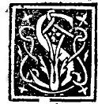

Chapter XII: On Its Third Singular Effect¶
On Its Third Singular Effect

Numerical Demonstration
For example, let $10$ be the quantity divided according to our Divine Proportion, so that one part—namely the greater ($a$)—is $\sqrt{125} - 5$, and the lesser ($b$) is $15 - \sqrt{125}$.
I say that if to $15 - \sqrt{125}$, which is the lesser part, we add the half of $\sqrt{125} - 5$, which is the greater part, the sum of the lesser part and the said half, when multiplied by itself, will be five times the square of the half of the said greater part. And this appears as follows:
The half of the greater part ($\sqrt{125} - 5$) is:
$$\frac{a}{2} = \sqrt{31\frac{1}{4}} - 2\frac{1}{2}$$
Adding this to $15 - \sqrt{125}$, which is the lesser part ($b$), yields:
$$b + \frac{a}{2} = (15 - \sqrt{125}) + \left(\sqrt{31\frac{1}{4}} - 2\frac{1}{2}\right) = 12\frac{1}{2} - \sqrt{31\frac{1}{4}}$$
Multiplying $12\frac{1}{2} - \sqrt{31\frac{1}{4}}$ by $12\frac{1}{2} - \sqrt{31\frac{1}{4}}$ produces:
$$\left(b + \frac{a}{2}\right)^2 = 187\frac{1}{2} - \sqrt{19531\frac{1}{4}}$$
and this is called the square of the sum.
Next, let the half of the said greater part also be squared—that is, multiply $\sqrt{31\frac{1}{4}} - 2\frac{1}{2}$ by $\sqrt{31\frac{1}{4}} - 2\frac{1}{2}$—which will make:
$$\left(\frac{a}{2}\right)^2 = 37\frac{1}{2} - \sqrt{781\frac{1}{4}}$$
and this is called the square of the half of the greater part, which is converterly one-fifth ($\frac{1}{5}$) of the square of the sum:
$$5 \times \left(37\frac{1}{2} - \sqrt{781\frac{1}{4}}\right) = 187\frac{1}{2} - \sqrt{25 \times 781\frac{1}{4}} = 187\frac{1}{2} - \sqrt{19531\frac{1}{4}}$$